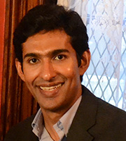
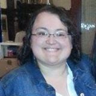
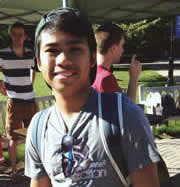
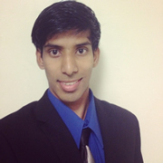
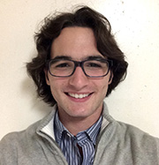

 
Dr. Mannu Sebastian Mannoor
Manu.Mannoor@stevens.edu
Education Ph.D., Mechanical & Aerospace Engineering, Princeton University (2014) M.A., Mechanical & Aerospace Engineering, Princeton University (2012) M.S., Biomedical Engineering, New Jersey Institute of Technology (2008) B.Tech., Electronics & Communication Engineering, University of Calicut (2006) Distinctions Emerging Alumni Scholars Award, Princeton Alumni Association (2013) Materials Research Society (MRS) Graduate Student Gold Award (2012) Luigi Crocco Award for Teaching Excellence (2012).

Ellexis Cook
Ellexis Cook earned a B.S. in Physics and a minor in Astronomy from Rowan University and a M.S. in Biomedical Engineering from NJIT. She is now working on her Ph.D. at Stevens in Mechanical Engineering with a concentration in Nanotechnology. Ellexis’ diversity of degree subjects has provided her with research experience spanning multiple scientific fields.
Currently she is working on 3D printing of Biological cells and circuitry. She is also a member of the National Service Fraternity, Alpha Phi Omega, and does community service in her spare time. Her other hobbies include USCF chess tournaments and AVA long distance walking events.

Miguel Natural
Miguel, known by many as Meeko, is currently a sophomore at Stevens Institute of Technology pursuing a bachelors in Mechanical Engineering. Despite attending Stevens, Miguel is involved with campus ministry at Seton Hall and lives in a Saint Paul’s Outreach Men’s Household just off of Seton Hall’s campus. His research focuses of the application of technology within 3D tissue printing.

Nesar Ahmed
Nesar was born in Bangladesh, but grew up in Paterson, New Jersey. Currently, he is studying towards his bachelor of engineering in Electrical engineering from Stevens Institute of Technology. His research interests are in the integration of electronics with biological components. He enjoys working with electronics and tinkering with integrated circuits.

Matthew Tomaro
Matthew Tomaro is an undergraduate student at Stevens Institute of Technology and is going for his combined Bachelor and Master Degrees in Mechanical Engineering. He is interested in research focused on the integration of mechanics, electronics, and biology to improve healthcare and decrease the complications of surgeries. Matt is from Parsippany, New Jersey and enjoys many leisurely activities like spending time with his family and friends and playing video games.

Deng Xiong
Deng Xiong, an exchange student from BIT(Beijing Institute of Technology), is now studying in mechanical engineering in SIT(Stevens Institute of Technology). He is a member of BIT Formula Racing Team and The Machine Intelligence Robocup Middle-sized Group which won the champion of Robocup China Open held in Hebei Province, in October 2013. He is eager to learn more and share the happiness of research. He loves playing basketball and swimming.